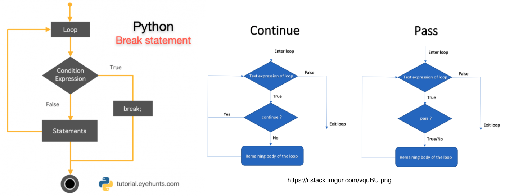

Loops#
For Loops#
You briefly saw an example of a for loop before
for i in range(100):
os.mdkir(f"MyNewFolder_{i}")
and I now want to build upon these concepts.
There are different kinds of loops and they all allow you to do one thing: Automize and speed up your workflow. In its simplest form, Loops are a way of you telling your computer, to repeat a computation or operation for a given amount.
For example:
Lets assume we have this list called grades, and these values are grades students got in an exam
grades = [1.0, 1.1, 4.4, 5.0, 3.7, 3,9]
You now want to use your knowledge on if else loops to check, if each element in this list is smaller than the school average. Lets say, the school average is 2.8.
Exercise 6.0: Think!#
Based on your knowledge so far, how would you solve this comparison? You dont actually have to code this, this is more about building a basic understanding on how to approach this.
If you are already familiar with the concepts of loops, please dont spoil the answer to your fellows, as this might hinder their learning process :)
As you see, this can be really really helpful.
Before we deepen our knowledge on for loops, I want to highlight a cool feature of the list datatype.
You can actually add or remove elements from a list, using python lingo we would call these data types mutable, wheras the opposite is called immutable. For a detailed description, please see here.
Most commonly, to add further elements to your list we use this expression
`List.append("My Value")`
if you want to remove elements from your list, you can use
`List.remove("My Value")`
Next thing to know is, that we can also create empty lists
MyList = []
This can be useful if you want to extract elements from one list and add these elements to a different list.
Exercise 7.0#
Complete the code cell below. Initiate two new lists called above_average and below_average. Append elements from the grades list to these lists, accordingly.
Remove the raise Exception("Solution Missing") statements once you entered your solution.
Hint: You want to use a nested structure here (so use two level (two indentations)).
school_average = 2.8
grades = [1.0, 1.1, 4.4, 5.0, 3.7, 3.9]
below_average = []
above_average = []
for grade in grades:
if grade < school_average:
above_average.append(grade)
elif grade > school_average:
below_average.append(grade)
RECAP#
So far, we have learned what variables and logical operators are, how to apply if/else clauses, what a for loop is and how to combine these concepts.
Variables are like a box you can use to store things in for later. For example, you can create a box called Age and store in it the value 27. You use it at any time now, once you stored in the box (e.g., once you put Age = 25 in your code terminal and you clicked on run (or str+enter) in your code cell).
Age is the name of that box, and 27 is the value that is stored in it. Once you told python about that box (meaning, you clicked on run in your code cell), python will now know about that box and its value. You can store any value you like in a box. You can also put text (this is what we call a string) in a box.
Name = "Janos"
Now python will know about that aswell, as long as you execute(run) the code cell.
If you forgot what is inside your box, you have two options. You can use print(box) or simply type box in your cell and run it.
Name = "Janos"
print(Name)
Name
Janos
'Janos'
These two ways are equivalent! Importantly, if you want to use your box for a operation later on, you have to make sure that you told python about the box before.
hello + Name
hello = 'Hi '
---------------------------------------------------------------------------
NameError Traceback (most recent call last)
Input In [14], in <cell line: 1>()
----> 1 hello + Name
2 hello = 'Hi '
NameError: name 'hello' is not defined
This will give you a NameError. The error message explicitly says: name ‘hello’ is not defined. Why? Because we first told python to use the variable (box) Name, add to it another variable called hello, before telling python, what hello actually is.
So make always sure, to create and initiate (run your variable in a code cell, so python know that it should remember it) your variables, before using them in a subsequent operation.
Python checks your code lines line by line. If any code line is faulty, it will break. Thats why in the example above, python will never reach
hello = "Hi "
because it already fails at
hello + Name
hello = "Hi "
hello + Name
'Hi Janos'
These boxes are not dependent from a code cell. Meaning
dog = "Amazing"
cat = "Scary"
print(f"Dogs are {dog}")
print(f"Cats are {cat}")
Dogs are Amazing
Cats are Scary
This still works, eventhough we defined both cat and dog in seperate cells.
Long story short:
1. Be mindful of the variables you want to use, how you call them, and what type they should be (integer,float,string,list)
2. If you want to use these variables for subsequent operations, make sure to create them before!
3. Try to avoid accidently overwriting your variables
Name = "Janos"
print(Name)
Janos
Name = "Ben"
print(Name)
Ben
Lists can be used to store more than one value.
banana = "banana"
peanut_butter = "peanut butter"
Pasta = "pasta"
shopping_list = [banana,peanut_butter,Pasta]
print(shopping_list)
['banana', 'peanut butter', 'pasta']
This works as well
shopping_list = ["banana","peanut butter","Pasta"]
print(shopping_list)
['banana', 'peanut butter', 'Pasta']
Logical operators are used to compare variables, or values. The most common ones are
< Something is smaller than something
> Something is larger than something
== Something is equal to something
!= Something is NOT equal to something
=> Something is more or equal to something
<= Something is less or equal to something
The output of these operators is always a logical, e.g. True if the condition is met or False if the condition is not met
3 < 5, 3 > 5
(True, False)
If/else clauses can be used to further investigate these ideas of logical operators. They are valuable, when you want your computer to only do a certain thing (print something, do something…) if a condition is met (e.g., its logical value is True).
if KVB == Strike and weather == rainy: (returns True, if the KVB is on strike and it is raining outside)
skip_classes()
elif weather == rainy: (Will only be checked if the first condition (KVB on strike and weather == rainy) is `False`; returns `True`, if it is raining)
use_KVB()
elif KVB == Strike: (Will only be checked, if neither if/elif statements are True.)
use_bike()
We do not need an else statement for this to work! Else should be used in situations, where you need a “fallback” action.
if salary > 3000: (If the salary is above 3000 euros, accept it)
accept_offer()
elif salary > 2500: (If it is not above 3000 euros, but its still above 2500 euros, try to negotiate)
negotiate()
else: (If its neither above 3000, nor above 2500, you dont see any point. You decline the offer.)
decline_offer()
A for loop can be used to tell python, do something over and over again. For example, you can tell python to go over each individual element in shopping_list.
The alternative way (without using for loops) would be to do
shopping_list[0],shopping_list[1],shopping_list[2]
('banana', 'peanut butter', 'Pasta')
But with a for loop you can tell pythoh, go through each element that is stored in shopping_list and do something with it.
for item in shopping_list:
print(item)
banana
peanut butter
Pasta
Lets break it down:
for (tells python, that you start are starting a for-loop)
item (the iterator. This is the name you give to each thing in the list as you loop through it. You can call it anything you want )
in shopping_list (Tells python: "Look inside the list called shopping_list, and go through each item one by one")
print(item) (Tells python, that you want to print each item, that you go through with your for loop)
We can combine both if/else clauses and for loops
for item in shopping_list:
if item == "peanut butter":
print("Thats all I need")
Thats all I need
Explaination:
You tell python to go through each item in your shopping list. If that item is peanut butter you want to print something.
And at last, we can also use our newly discovered list datatype to extract items from a for loop
FoodICareAbout = []
FoodIDontCareAbout = []
for item in shopping_list:
if item == "peanut butter":
FoodICareAbout.append(item)
else:
FoodIDontCareAbout.append(item)
Explaination:
You tell python to go through each item in your shopping list. If that item is peanut butter you want to `append` (add) it to a list called `FoodICareAbout`.
If the item in shopping list is not peanut butter, you want to add that item to a list called `FoodIDontCareAbout`:
print(f"I care about {FoodICareAbout}")
print(f"I dont care about {FoodIDontCareAbout}")
I care about ['peanut butter']
I dont care about ['banana', 'Pasta']
FoodICareAbout,FoodIDontCareAbout
(['peanut butter'], ['banana', 'Pasta'])
Final recap exercise:#
Create a list, and give it any name you like All these options work and are valid
Food = []
Hobbies = []
AList = []
Add (type something in the [] brackets) any value you want to. For example, you could add your favorite breakfast/lunch/dessert options (in strings “”) or whatever you like and name your list FoodIlike.
Then use a for loop to go through each item in that list. Try to come up with something that either involves if/else clauses or the list.append functionality. If you want to use the latter, make sure to create two new lists, so python knows where you want to store your items in !
Hint: Take a look at the solution from exercise 7.0, if you are stuck.
Once your for loop is completed (the loop went through ALL values), add a print statement that says “Loop finished”
hobbies = ["Prepare Python Course","Sleep","Run"]
for hobby in hobbies:
if "Python" in hobby:
print(f"{hobby} is a respectable hobby")
else:
print(f"Why even bother with {hobby}?")
Prepare Python Course is a respectable hobby
Why even bother with Sleep?
Why even bother with Run?

We can also use for loops to compute the sum of a list
sum = 0
for grade in grades:
'''
You can either do sum = sum + grade OR sum+=grade. These operations are equivalent
'''
sum+=grade
print(sum),print(f"The average of this list is {sum/len(grades)}")
19.099999999999998
The last for loop feature I want to talk about is the enumerate function. What does enumerate do? It is essentially a counter variable, that helps you keep track of the elements you have looped through.
for idx, grade in enumerate(grades):
print(idx,grade)
0 1.0
1 1.1
2 4.4
3 5.0
4 3.7
5 3.9
So this is pretty useful of keeping track. Enumerate can be helpful, if you are interested in the position of a target element. For example, if you want to know, at what position a grade is below or above average. In the example of 5 values, you can just look it up, but if we talk about huge arrays ( > 1000 elements) this wont work anymore.
Exercise 8.0#
Try now to loop through the grades list again. If an element is below average, display (print) the value and index using f-string formatting.
'''
This cell is a reminder on f-string formatting
'''
number = 20
print(f"I am using f-string formatting to display the number {number}")
I am using f-string formatting to display the number 20
for pos,grade in enumerate(grades):
if grade > school_average:
print(f"The grade {grade} at index {pos} is below average")
The grade 4.4 at index 2 is below average
The grade 5.0 at index 3 is below average
The grade 3.7 at index 4 is below average
The grade 3.9 at index 5 is below average
Bonus Exercise#
Using a for loop, re-create the following output pattern
1
1,2
1,2,3
1,2,3,4
1,2,3,4,5
Hint: This gets easier if you use the list datatype
l = [1]
for i in range(5):
print(*l)
l.append(i+2)
1
1 2
1 2 3
1 2 3 4
1 2 3 4 5
Bonus Exercise#
Using a for loop, print the Fibonacci series up to 10 numbers. The first number should be a 0
The output should look like this:
0,1,2,3,5,8,13,21,34
The logic = (0 + 1 ) = 1; (2+1) = 3; (2+3) = 5;...
first,second = 0,1
num = 0
for i in range(9):
print(num)
num = first+second
first = second
second = num
0
1
2
3
5
8
13
21
34

While Loops#
Next to for loops, we can also use while loops. Since for loops are more common than while loops (and while loops can lead to unexpected results, if not used properly), I dont want to spend too much time on them.
The general logic behind these loops is, that while something is True, do something.
while Tired:
drink(coffee)
While loops can be handy, when you want to apply some operation, until a certain condition or threshold is met.
i = 0
while i < 5:
print(i)
i = i + 1
#i+=1 yields the same results as i = i + 1
0
1
2
3
4
As said before, they can become very dangerous, if you forget a certain keyword.
if you would run
i = 0
while i < 5:
print(i)
so without actually updating i at each iteration, your loop would run infinitely long. You would need to stop your kernel and re-start your notebook, if your computer does not crash before. So please dont do that and always make double sure your while loops work right!
You can also combine your while loops with if/else statements
beer = 0
while beer < 5:
print("One more beer please")
beer += 1
else:
print(f"Some water please, I already had {beer} beer!")
One more beer please
One more beer please
One more beer please
One more beer please
One more beer please
Some water please, I already had 5 beer!
Exercise 9.0#
Calculate the number of friends that you can invite to the cinema using a while-loop (This Exercise was stolen from Peer Herholz)
money = 43
ticket_price = 10
During each iteration, keep track of the amount of friends you are able to invite using a variable called counter. Display the numbers of friends you can invite using f-string formatting.
Hint: If you struggle approaching this, try to break the problem down step by step:
You have 43 euros/dollars/… and want to invite as many friends as you can. Each ticket costs 10 euros. You can only invite friends while you have enough money to pay for the ticket, e.g. while you have more money than the ticket should cost.
friends = 0
money = 43
ticket_price = 10
while money >= ticket_price:
money-=ticket_price
if money > 10:
friends+=1
print(f"I already invited {friends} friends and I have {money} euros left")
else:
print("I have no more money to invite any of my friends")
I already invited 1 friends and I have 33 euros left
I already invited 2 friends and I have 23 euros left
I already invited 3 friends and I have 13 euros left
I have no more money to invite any of my friends
Flow Control#
We can also expand on this idea and use something called flow control.

break can be inserted in your loops, it will automatically stop your loop, eventhough the while condition is still true.
i=0
while i < 5:
print("Still true")
i+=1
if i == 3:
print("Break")
break
Still true
Still true
Still true
Break
Continue can be used to stop a current iteration, but you still want to go through the remaining items
i=0
while i < 5:
#print("Still true")
i+=1
if i == 1:
print(f"I dont care about that value {i}, just start over")
continue
elif i == 3:
print(f"I dont like that value {i}, stop the loop")
break
elif i == 2:
print(f"This does actually nothing at value {i}")
pass
I dont care about that value 1, just start over
This does actually nothing at value 2
I dont like that value 3, stop the loop
Bonus#
Use the break feature and add it to the while loop from exercise 9.0. Since you are a greedy person, you only want to invite two of your friends. Include this in your loop.
friends = 0
money = 43
ticket_price = 10
while money >= ticket_price:
money-=ticket_price
if money > 10:
friends+=1
print(f"I already invited {friends} friends and I have {money} euros left")
if friends == 2:
print(f"I am greedy as hell!")
break
else:
print("I have no more money to invite any of my friends")
I already invited 1 friends and I have 33 euros left
I already invited 2 friends and I have 23 euros left
I am greedy as hell!